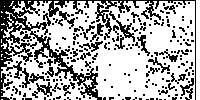
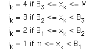

We use the four transformations
| T1(x, y) = (x/2, y/2), | the midpoint of |
| T2(x, y) = (x/2, y/2) + (1/2, 0), | the midpoint of |
| T3(x, y) = (x/2, y/2) + (0, 1/2), | the midpoint of |
| T4(x, y) = (x/2, y/2) + (1/2, 1/2), | the midpoint of |
Starting from a point
Two issues remain:
| how to interpret any departures from uniform fill of the square, and |  |
| how to convert a time series |
 |
Return to Data Analysis by Driven IFS